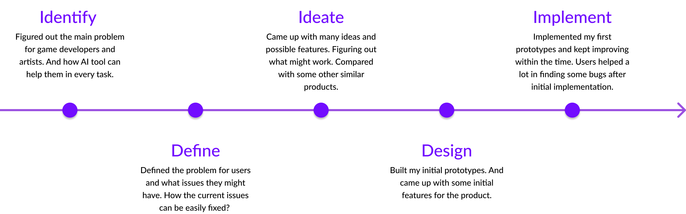
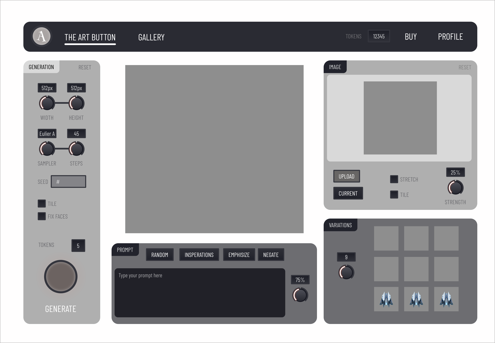

THE ARTBUTTON PURPOSE
ArtButton is an AI-powered tool designed to revolutionize game asset creation. By leveraging advanced AI technology, it enables game artists to generate high-quality art assets through text prompts or image references, significantly accelerating the creative workflow while maintaining artistic quality. The tool supports various art styles and formats, allowing for seamless integration into existing game development pipelines. With its intuitive interface and powerful AI capabilities, ArtButton helps reduce production time, lower costs, and empower artists to focus on creative direction rather than repetitive asset creation tasks.
Platform: Web
Date: 2024
HOW TO USE
PROBLEM
Traditional game asset creation is costly and time-consuming. The ArtButton's AI-powered solution streamlines this process, reducing expenses while delivering high-quality results.
SOLUTION
An AI-powered tool that generates game assets through text prompts or image references, enabling artists to create high-quality assets quickly and efficiently.
ROLE
As the lead designer, I collaborated with two engineers to develop and implement the AI-powered art generation system. The project spanned six months, during which we successfully integrated all core features and functionality.
TOOLS AND PLATFORM
The project was developed exclusively for web platforms. I utilized Figma for creating high-fidelity prototypes and mockups, while Stable Diffusion served as the core AI engine for image generation, ensuring high-quality and consistent results.
TARGET MARKET
The primary personas are the game artists or the game creators who would like to create the necessary game assets in a cost effective way. And they can do it by themselves using AI.
PERSONAS
MOTIVATIONS
Luke is a creative game developer who needs to create many game assets in a short period of time. And he needs to find the way how to create them very fast.
GOALS
- Needs to make sure that he can create all needed assets in a short period of time.
- The game assets should be good quality.
- The game assets can be easily implemented in to the game.
- Needs easily to improve an asset if there is any issues.
DESIGN PROCESS
MAIN COMPETITORS
ArtButton competes with several established AI art generation platforms, each offering unique capabilities:
Dream Studio
Stable Diffusion-based platform offering high-quality image generation with extensive customization options.
OpenAI DALL-E
Advanced AI model known for its ability to create highly detailed and contextually accurate images from text descriptions.
Midjourney
Discord-based platform specializing in artistic and creative image generation with a strong focus on aesthetic quality.
Adobe Firefly
Professional-grade AI tool integrated with Adobe's creative suite, offering seamless workflow for designers.

MAIN FEATURES
Text to Image
This is the most basic feature of the Art Generation AI. This allows users to type words, known as "the prompt," and the AI will generate different images. Writing high-quality "prompts" is tricky, and mastering this skill is known as "prompt engineering." It's important to generate many images, possibly tens or even hundreds. The user acts more as a curator of art rather than the artist.
The big benefit here is that it generates art seemingly out of nothing.

Image to Image
This, I would say, is the best feature of the Art Generation. It allows the user to take images they already like, which are closer to what they want, plus "the prompt," and run them through the art generation again to create the next evolution. Many standard image tools also help here, such as paintbrush, zooming and cropping, as well as mirrors and flips. Images might come from the art robot or something that the user had drawn themselves.
The big benefit here is that this allows the user to guide the robot to a successful image.

In-painting
With in-painting, a user can erase part of an image and regenerate just that part. This is very useful once the user really likes the image but needs to fix problem areas, often eyes or hands. This is probably the most tricky feature for users to use.
The big benefit here is when only small areas need fixing.

METRICS / PAIN POINTS
Key Metrics & Challenges
I was mainly focusing on collecting metrics such as: site visits, sign ups, image generations and payments. These metrics were the most important numbers to measure the success. And I was able to improve the metrics in the second iteration.
Major Challenges
- Monetization Issues:
- It was hard to monetize the tool
- Most users wanted to use the tool for free
- Limited paying user base
- Cost Efficiency:
- Very expensive to generate images
- Not cost-effective for the business
- Not enough paying users to cover costs
- Platform Restrictions:
- Steam issued a new rule prohibiting AI-generated assets
- Significant impact on target market
- Need to pivot target audience
Despite these challenges, the project provided valuable insights into AI-powered tool development and user behavior in the creative industry. The experience highlighted the importance of considering market restrictions and cost structures in AI product development.
WIREFRAMES
ITERATION 1
Main Ideas
This iteration draws inspiration from audio synthesizers, creating an intuitive and powerful interface for AI art generation. The layout is thoughtfully divided into distinct functional sections:
- Output Area:
- Displays the generated artwork in high resolution
- Provides clear visualization of results
- Enables easy comparison of different generations
- Variations Area:
- Shows multiple versions of the generated art
- Facilitates easy comparison and selection
- Enables quick iteration on successful results
- Image Upload Area:
- Allows users to input reference images
- Supports image-to-image generation
- Enables style transfer and modifications
- Prompt Area:
- Provides a dedicated space for text prompts
- Enables detailed input control
- Supports complex prompt engineering
- Generation Area:
- Contains controls for fine-tuning
- Provides quick access to common settings
- Enables precise control over generation
The design prioritizes efficiency by placing all essential features on a single page, enabling users to create multiple images seamlessly. The integrated Gallery page serves as a comprehensive history of all variations, making it easy to track and revisit previous generations.

ITERATION 2
Main Takeaways
Building upon the initial design, the second iteration focused on creating a more intuitive and efficient user experience. The interface was refined to be more standard and user-friendly, with significant improvements in workflow and functionality.
Interface Improvements
- Streamlined Prompt Area:
- Removed random, inspire, and emphasize features
- Created a cleaner, more focused input experience
- Improved prompt visibility and editing capabilities
- Smart Upload Area:
- Implemented a space-saving collapsible design
- Auto-expands only when users drag in images
- Maintains full functionality while reducing visual clutter
Generation Controls
- Three-Category Organization:
- Image Size: Quick access to common dimensions
- Generation Parameters: Core settings for image creation
- Seed Settings: Optimized for cost efficiency (removed tile and face fix features)
- Enhanced Control Placement:
- Image count and token count positioned near generate button
- Improved visibility of key controls
- Streamlined workflow for frequent adjustments
User Experience Enhancements
- Dynamic Authentication: Generate button transforms into login button for logged-out users
- Improved Navigation: More intuitive placement of controls and features
- Optimized Layout: Better use of space while maintaining functionality
These refinements resulted in a more polished and efficient interface that better serves both new and experienced users while maintaining all essential functionality. The streamlined design reduces cognitive load while increasing productivity.
GALLERY
Key Features
The gallery serves as a comprehensive workspace for managing and revisiting generated artwork. It provides a seamless experience for users to track their creative journey and iterate on previous generations.
- Authentication-Based Access: Gallery functionality becomes available upon user login, ensuring secure and personalized access to generated content.
- Advanced Search Capabilities: Powerful search functionality enables users to quickly locate specific images or prompts from their generation history.
- Comprehensive Documentation: Each image is automatically documented with its creation date and associated prompt, creating a valuable reference library of past generations.
- Prompt Management: Users can easily access, copy, and modify previous prompts, streamlining the iteration process and maintaining consistency across generations.
- Seamless Editing Workflow: One-click access to the generator UI allows users to instantly modify any image from their gallery, enabling quick refinements and variations.
The gallery feature transforms the creative process by providing a powerful tool for managing, organizing, and iterating on generated artwork, making it an essential component of the ArtButton experience.
PAY PAGE
Design Improvements
The payment page underwent significant refinements to enhance user experience and conversion rates. Key improvements include:
- Typography Enhancement:
- Implemented a more professional and modern font selection
- Improved readability and visual hierarchy
- Enhanced overall brand perception
- Content Optimization:
- Streamlined information architecture
- Reduced text density for better clarity
- Focused on essential information
- Visual Design Refinement:
- Enhanced visual hierarchy and spacing
- Improved color contrast and accessibility
- Added subtle animations and transitions
- Conversion Optimization:
- Redesigned pricing ribbons to highlight bulk purchase benefits
- Added clear value propositions for each tier
- Improved call-to-action visibility and effectiveness
These improvements resulted in a more professional and user-friendly payment experience, with enhanced visual appeal and clearer value propositions that encourage users to consider bulk purchase options.

OUTCOME
Project Results
I was mainly focusing on collecting metrics such as: site visits, sign ups, image generations and payments. These metrics were the most important numbers to measure the success. And I was able to improve the metrics in the second iteration.
Major Challenges
- Monetization Issues:
- It was hard to monetize the tool
- Most users wanted to use the tool for free
- Limited paying user base
- Cost Efficiency:
- Very expensive to generate images
- Not cost-effective for the business
- Not enough paying users to cover costs
- Platform Restrictions:
- Steam issued a new rule prohibiting AI-generated assets
- Significant impact on target market
- Need to pivot target audience
Key Learnings
- Market Validation:
- Importance of early market research
- Need to validate platform policies
- Understanding user willingness to pay
- Technical Considerations:
- Cost structure of AI generation
- Scalability challenges
- Performance optimization needs
- Business Model:
- Need for sustainable pricing
- Importance of cost control
- Alternative revenue streams
Despite these challenges, the project provided valuable insights into AI-powered tool development and user behavior in the creative industry. The experience highlighted the importance of considering market restrictions and cost structures in AI product development.